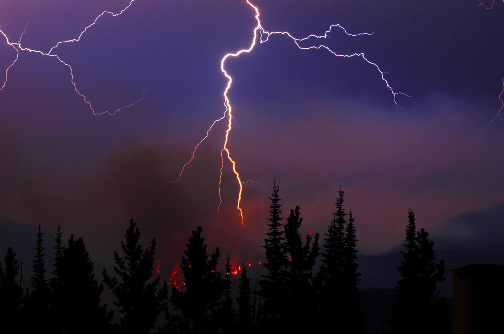
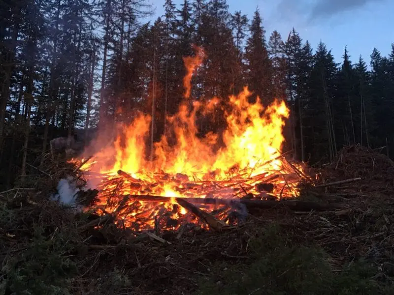
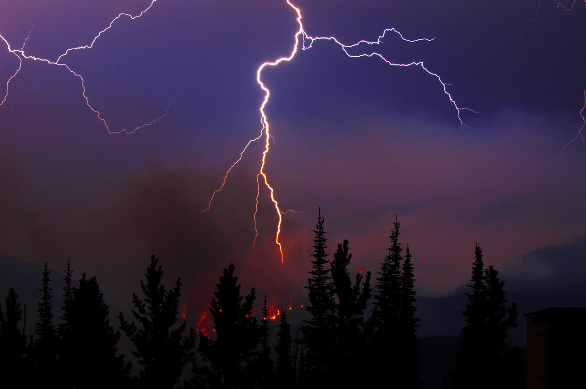
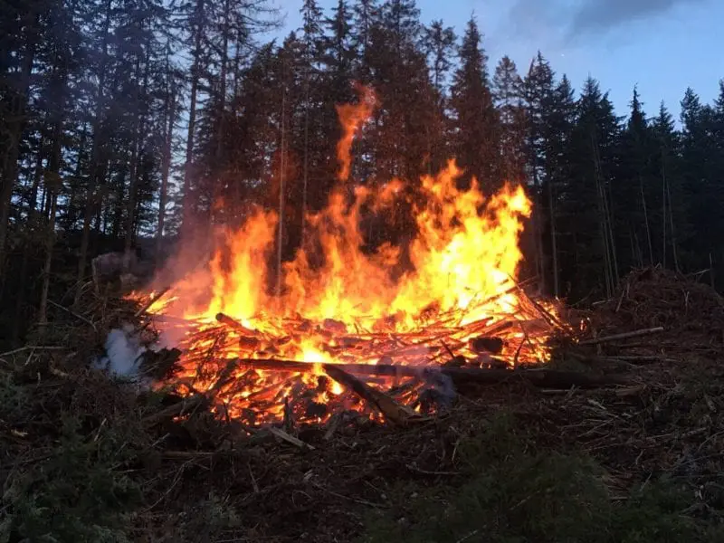
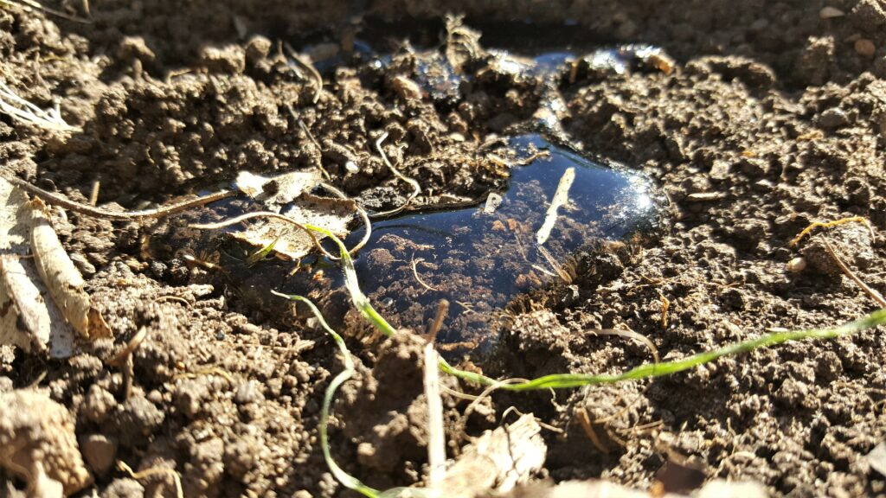
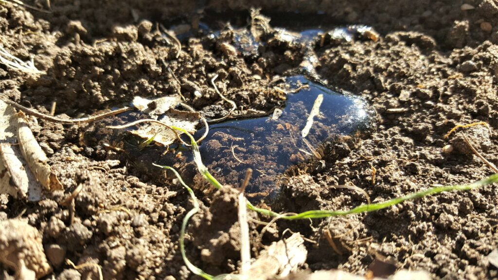

A general View
Approximately 90% of fires in the last decade have been human-caused, either through negligence, accident or intentional arson. Some of the fires caused by accidents and negligent acts are through unattended campfires, sparks, irresponsibly discarded cigarettes and burning debris. The remaining 10% of fires are caused by lightning strikes, which are especially prevalent in the Western United States and Alaska. In the 1930's, researchers in the southern United States argued against the negative perspective that has surrounded fire, with the belief that all fire is bad. It was realized that the devastating picture painted by huge-scale fires produced fear in the minds of the public (and in politicians and scientists alike), and that this generated detrimental results in response to any wildland fires.
 



But still fire can also be seen as a boon to the wildlife. Below are the reasons why...
Seed Germination: Some plants have seeds with hard coatings that prevent germination. Fire can crack these coatings, aiding germination.
Habitat Renewal: Fire promotes the growth of new vegetation, providing fresh habitats and food sources for various animal species.
Biodiversity Promotion: Controlled fires clear out undergrowth, allowing sunlight to reach the forest floor and encouraging diverse plant species to thrive.
Nesting Opportunities: Fire can clear out underbrush, creating open spaces and safe areas for ground-nesting birds and mammals.
Fire can cause soil damage, especially through combustion in the litter layer and organic material in the soil. This organic material helps to protect the soil from erosion. When organic material is removed by an essentially intense fire, erosion can occur. Heat from intense fires can also cause soil particles to become hydrophobic. Rainwater then tends to run off the soil rather than to infiltrate through the soul. This can also contribute to erosion. In actuality, the negative effects of fires on soils are often exaggerated, and many fairly intense fires in western United States forests cause little soil damage. There is also the potential for alien plants to become established after fire in previously uninfested areas.
 
